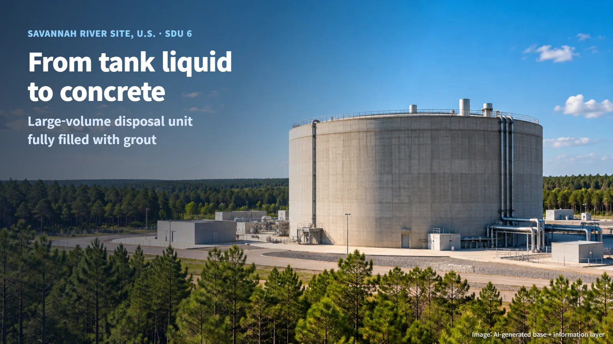
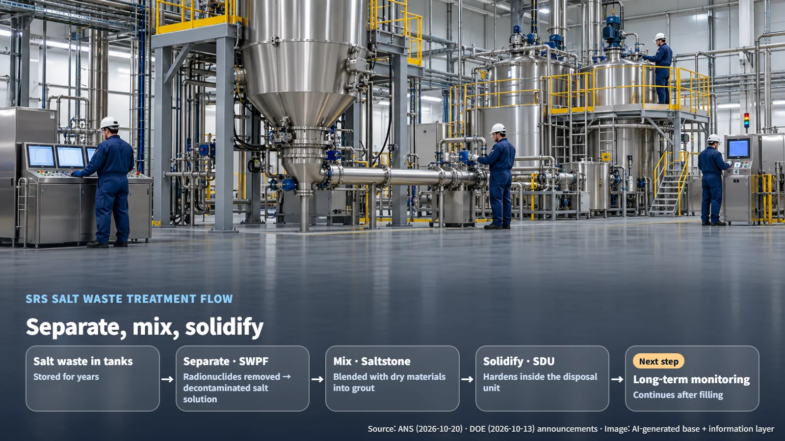
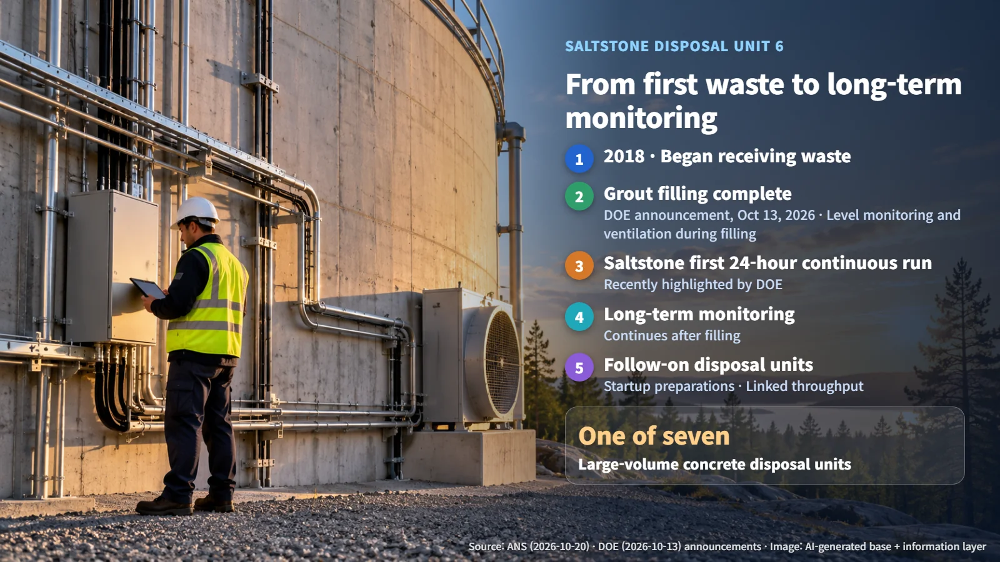

United States · Radioactive Waste
From Tank Liquid to Concrete: Savannah River Site Finishes Filling Saltstone Disposal Unit 6
Savannah River Site has filled Saltstone Disposal Unit 6 with grout, turning treated tank salt waste into solid form ahead of long-term monitoring.
When people picture radioactive waste, many imagine steel drums or large storage tanks. That raises a natural question: what eventually happens to the liquid waste held inside those tanks, and how does it end up in a disposal facility? A recent milestone in the United States offers a clear answer.
On October 20, 2026, the American Nuclear Society (ANS) reported that Saltstone Disposal Unit 6 (SDU 6), a large-volume disposal facility at the Savannah River Site (SRS) in South Carolina, has been completely filled with grout. The original announcement from the U.S. Department of Energy (DOE) was dated October 13. Let's walk through what this facility is and the steps liquid waste goes through before it arrives there.

Salt Waste Left in the Tanks
SRS holds salt waste that has been stored in tanks over many years. Salt waste is radioactive liquid waste containing a variety of dissolved salt compounds. Think of seawater carrying dissolved salt: here, the water carries a mix of chemical constituents together with radioactive material.
Liquids can flow and seep. For that reason, a basic principle of radioactive waste management is to turn liquids into solids, a process called solidification. Once the waste is locked into a solid, the radioactive material has far less ability to move into its surroundings, and it becomes much easier to keep it stable in one place. A spilled glass of water spreads across a table; a block of hardened plaster stays exactly where it was set down. Solidification applies that same everyday difference to radioactive waste.
SDU 6 is one of seven large-volume concrete disposal facilities at SRS that stabilize and dispose of this salt waste. The central image of this story is old liquid moving out of tanks and becoming a solid inside a massive concrete structure.
Separate, Mix, Solidify
Salt waste passes through three main stages before it reaches a disposal unit.
The first stage is separation. At the Salt Waste Processing Facility (SWPF), radionuclides are separated from the salt waste. Radionuclides are elements that emit radiation. The liquid that comes out of this step is called decontaminated salt solution, meaning a salt solution from which the radioactive material has been removed. Separating first allows each stream to go to the treatment route that suits it best.
The second stage is mixing. The decontaminated salt solution is sent to the Saltstone facility, where it is blended with dry materials to make grout. Grout is a slurry of cement-based materials mixed with liquid that hardens over time much like concrete. The material used to fill the joints between floor tiles is a good everyday comparison.
The third stage is solidification. The grout is poured into the disposal unit and allowed to harden there. Picture a thick gray slurry slowly rising inside an enormous concrete vessel.

The volume of the solidified waste ends up larger than the original liquid. The reason is simple: dilution, chemical treatment and blending with dry materials each add something to the liquid along the way, so the final solid carries more material than the waste that started out in the tank. In exchange for that larger volume, a liquid that could flow becomes a solid that stays in place.
What Filling SDU 6 Shows
SDU 6 began receiving waste in 2018 and has now been filled. Taking a single large disposal unit from empty to full is a sign that the treatment chain of separation, mixing and solidification is working together in practice.
Alongside the SDU 6 milestone, DOE also highlighted the Saltstone facility's first 24-hour continuous processing run. Continuous operation means running the equipment around the clock to keep producing grout without a break.
Operational and safety procedures were applied throughout the filling process. Crews monitored the grout level inside the disposal unit and operated the ventilation functions built into its design. In other words, they tracked how high the slurry had risen while also managing the airflow inside the facility, keeping the process under close watch from the first pour to the last.
The milestone also shows how connected the whole system is. Pretreatment speed upstream, solidification capacity in the middle and disposal capacity at the end interlock to set the overall throughput. When one step slows, the entire flow slows with it. Much like a factory production line, each stage has to keep pace with the others for waste to move steadily into disposal.
Next Steps: Long-Term Monitoring and Follow-On Disposal Units
Now that filling is complete, SDU 6 is planned to remain under long-term monitoring. This is the phase in which the facility's condition continues to be watched and managed after the waste is in place. Filling a disposal unit completes one chapter of its life, and careful observation of how it performs over time begins the next.

Waste processing at SRS continues with follow-on disposal units. Three things are worth watching from here:
- Preparations to bring the follow-on disposal units into operation
- Throughput of the pretreatment and solidification facilities
- The monitoring parameters and long-term management plan for the filled unit
Liquid in a tank becomes a solid in concrete, and long years of monitoring follow. Separating, mixing, solidifying and then watching over the result form one long, connected process, and that is what radioactive waste management looks like in practice. SDU 6 shows that process clearly from start to finish.